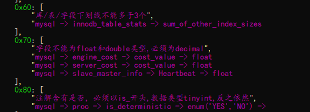
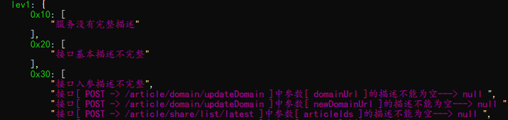
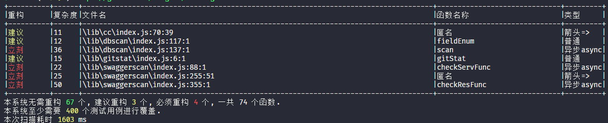
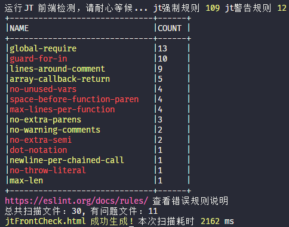
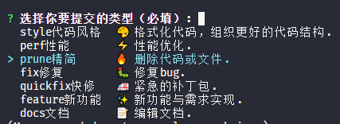
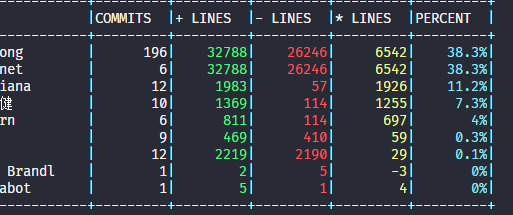

加推研发质量与规范实战前言技术负债数据库设计质量工具技术架构：通用：表：字段：索引：API接口设计质量工具重构及工具实战老生常谈SOLIDJS变量代码圈复杂度JS代码质量规范其他辅助命令Git提交规范小结
产品详细需求评审会过后，项目经理或组长将会拆分需求到每个人身上，随后程序员们将进入风起云涌的设计与编码阶段。💥
编码不是结果，而是过程。😶
技术负载 (Technical debt)，主要指看似编码完毕甚至已上线，但实际代码内部有众多隐患，好似欠下的一笔笔债务，总要还的。😔
公式如下：
x技术债务(人*天) = 修复重复冗余代码的时间成本 + 修复质量违规的时间成本 + 注解重要代码的时间成本 + 修复未测试覆盖代码的时间成本 + 降低代码复杂度的时间成本 + SKY认为，技术负债的本质，是一种对代码可维护性和可持续性发展的度量。
我们通过制定编码规范和扫描工具这一手段来降低技术负债。🔥
拿到一份无注解的数据库表，你的心情是？😔
拿到一份拼音和英文混排的表，你的心情是？😔
参考 阿里巴巴Java开发手册中的MYSQL 数据库规范 整理如下加推数据库设计规范：😶
代码框架中会使用的特殊字段，例如time_c, time_m, is_del 等
但谁来监督检测，测试？研发？项目经理？上万个字段怎么查？每次的增量谁来查？😔
xxxxxxxxxxnpm i -g skyjt // 安装加推质量工具jt db -c 数据库配置.json // 扫描指定配置的数据库加推规范
加入到自动化构建中，妥妥的😄
当后端代码发生改变，自动构建一份最新的API接口文档。相信99%的IT公司都已经做到了😶
这个API参数什么含义？有几种可能的字符串？有特殊值的特殊处理嘛？😔
自动生成API文档后，还需要有质量要求，skyjt针对swagger2.0 API文档进行质量扫描
xxxxxxxxxxnpm i -g skyjt // 安装加推质量工具jt swagger -c [远程|本地]swagger文档
加入到自动化构建中，妥妥的😄
以下知识点，不展开请自行google🔥
| 英文 | 中文 |
|---|---|
| Single Responsibility Principle | 单一职责原则 |
| Open Closed Principle | 开闭原则，允许用户添加功能而不必修改现有的代码 |
| Liskov Substitution Principle | 里氏替换原则 |
| Law of Demeter | 迪米特法则，最少知道原则 |
| Interface Segregation Principle | 接口隔离原则 |
| Dependence Inversion Principle | 依赖倒置原则 |
我们的规则是这样的
xxxxxxxxxxlet r=/(^(s|str|d|date|n|f|b|is|a|arr|o|obj|fn|r|re|g){1}[A-Z]+[a-zA-Z\d]*((?!_).)*$)/gm// 对于上面5的正则诠释，之后通过AST解析进行变量名检测jt cv //对项目变量命名进行扫描有很多的计算方式，其中最简单的是，代码流程图中，代码圈复杂度=图形的边-图形的节点+2 这是一个图论问题V(G)=E-N+2😵 适用任何高级语言
核心的结论是：代码复杂度低，代码不一定好，但代码复杂度高，代码一定不好🔥
一个项目，几千个函数，人为来计算耗时耗力，于是我们将圈复杂度扫描加入加推质量工具套件中
xxxxxxxxxxjt cc // 可以增加参数 -a 展开所有函数，未来可以对函数进行更精准的检测
对于复杂度较高的函数，优先重构😄 扩展知识：认知复杂度
对更多的质量检查，统一加入到加推质量工具套件中
xxxxxxxxxxjt ccc // 可以增加参数 -s 将错误类型聚合
| 命令 | 解释 |
|---|---|
| jt ecc | 快速了解项目规模，文件最大行数是否超过阀值，函数体函数是否过大等 |
| jt todo | 快速扫描项目中 含有todo fixed notice xxx 等代码标记的文件及位置 |
| jt comment | 快速扫描项目中 那些函数没有编写注解 |
😄
修改了就提交，改了啥，懒得写注解，和项目管理系统的无法关联？😶
提交规范为此而提出：😃
xxxxxxxxxxjt czjt //安装加推提交标准化模式git cz //准备提交
其他Git辅助工具
xxxxxxxxxxjt gitstat //统计git author
在Precommit之前做质量阀值，在提测之前做质量复查😄
规范标准的提出，到规范的落地，并不是一条顺畅的大道，使用规范工具进行辅助是一个很好的思路。
我们的代码质量之路是星辰大海。🔥